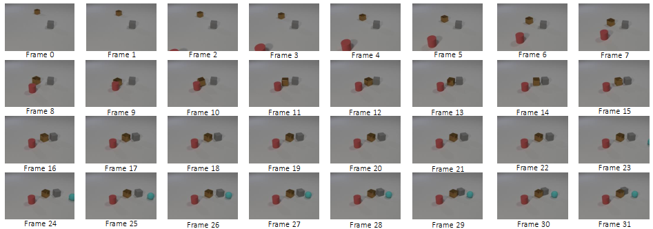
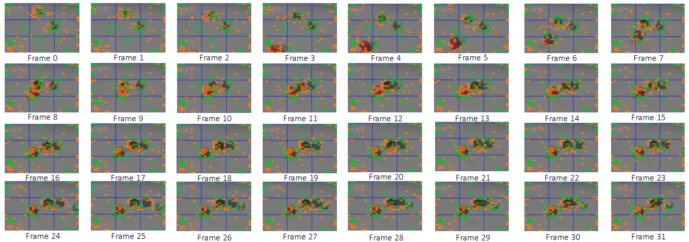
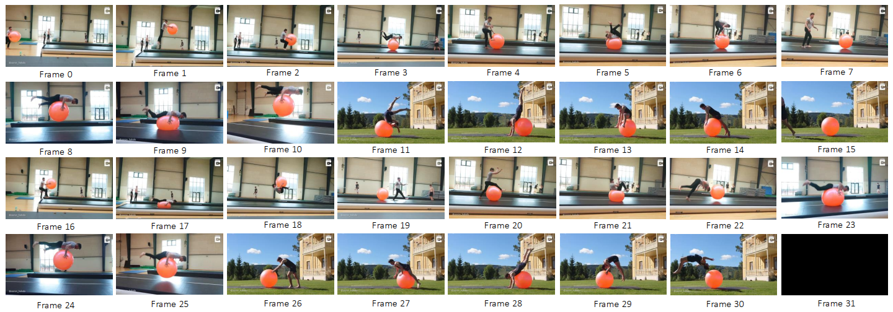
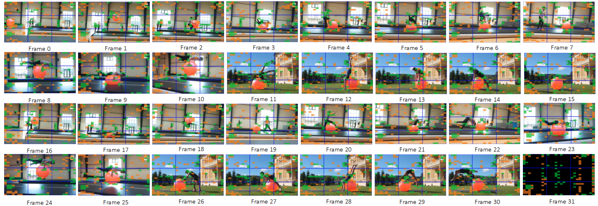

The top is the essential differences compared with common token reduction methods, instead of simply removing unimportant or merging very similar tokens, ours utilizes a global optimization strategy to further exploit and aggregate necessary semantic and context from these onto the remaining tokens. Bottom is our proposed pipeline to adopt Optimal Transport to aggregate information within intra- and inter-frame levels for video tokens.
Video Large Language Models (VLLMs) demonstrate strong video understanding but suffer from inefficiency due to redundant visual tokens. Existing pruning primary targets intra-frame spatial redundancy or prunes inside the LLM with shallow-layer overhead, yielding suboptimal spatiotemporal reduction and underutilizing long-context compressibility. All of them often discard subtle yet informative context from merged or pruned tokens. In this paper, we propose a new perspective that elaborates token Anchors within intra-frame and inter-frame to comprehensively aggregate the informative contexts via local-global Optimal Transport (AOT). Specifically, we first establish local- and global-aware token anchors within each frame under the attention guidance, which then optimal transport aggregates the informative contexts from pruned tokens, constructing intra-frame token anchors. Then, building on the temporal frame clips, the first frame within each clip will be considered as the keyframe anchors to ensemble similar information from consecutive frames through optimal transport, while keeping distinct tokens to represent temporal dynamics, leading to efficient token reduction in a training-free manner. Extensive evaluations show that our proposed AOT obtains competitive performances across various short- and long-video benchmarks on leading video LLMs, obtaining substantial computational efficiency while preserving temporal and visual fidelity.
Overall pipeline of our AOT. Our method compresses tokens of video LLMs across spatiotemporal through optimal transport, first establishing token anchors within each frame to cover semantically important and spatially diverse token candidates, then utilizing optimal transport to aggregate the necessary informative cues within Intra-Frame at phase I, and finally shifting the optimization strategy into temporal within Inter-Frame at phase II. The proposed AOT preserves both temporal and visual integrity by utilizing efficient SinkhornKnopp Iteration to solve the optimal transport plan assignment.
Table 1. Comparison of state-of-the-art methods on LLaVA-OneVision across video benchmarks. The best performance among those with similar retention ratios Ratio is highlighted in bold, while the second best will be denoted as underlined.
Table 2. Comparison of state-of-the-art methods on LLaVA-Video across video benchmarks. The best performance among those is highlighted in bold, while the second best will be denoted as underlined, demonstrating consistent effectiveness.
Table 3. Comparison of state-of-the-art methods on LLaVA-OneVision across video benchmarks. The best performance among those with similar retention ratios Ratio is highlighted in bold, while the second best will be denoted as underlined. AOT w Dyn denotes we apply dynamic temporal segmentation to obtain adaptive frames within each clip, following FastVID.
Table 4. Comparison of state-of-the-art methods on LLaVA-Video across video benchmarks. The best performance among those is highlighted in bold, while the second best will be denoted as underlined, demonstrating consistent effectiveness. AOT w Dyn denotes we apply dynamic temporal segmentation to obtain adaptive frames within each clip, following FastVID.




@article{li2026token,
title={Token Reduction via Local and Global Contexts Optimization for Efficient Video Large Language Models},
author={Li, Jinlong and Jiang, Liyuan and Zhang, Haonan and Sebe, Nicu},
journal={arXiv preprint arXiv:2603.01400},
year={2026}
}